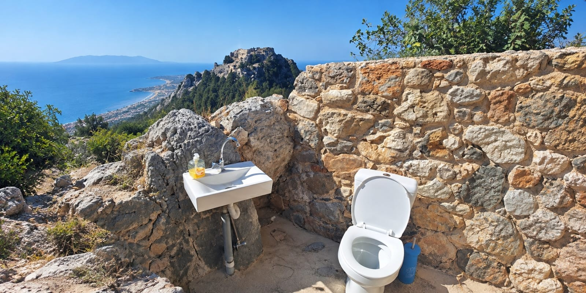

Meest bekende wc van KosDe wc van Oud Pyli
Midden in de bergen bij het oude dorp Oud Pyli staat de bekendste openbare wc van het eiland.
Er is geen dak en geen ramen — je zit letterlijk in de natuur. Toch hoef je niet bang te zijn dat iemand je ziet: de plek is zo gekozen dat je privacy hebt.
Wat je wél hebt, is een prachtig uitzicht over de omgeving. Uniek op Kos.